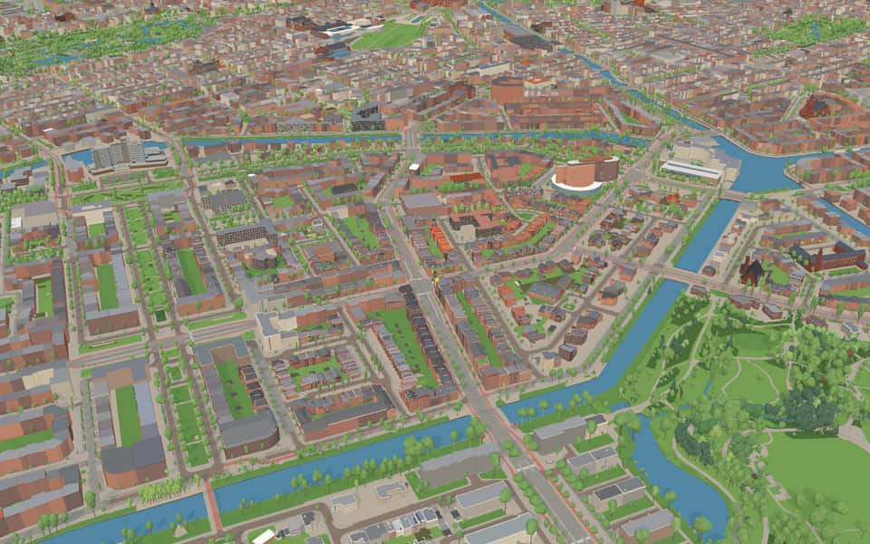
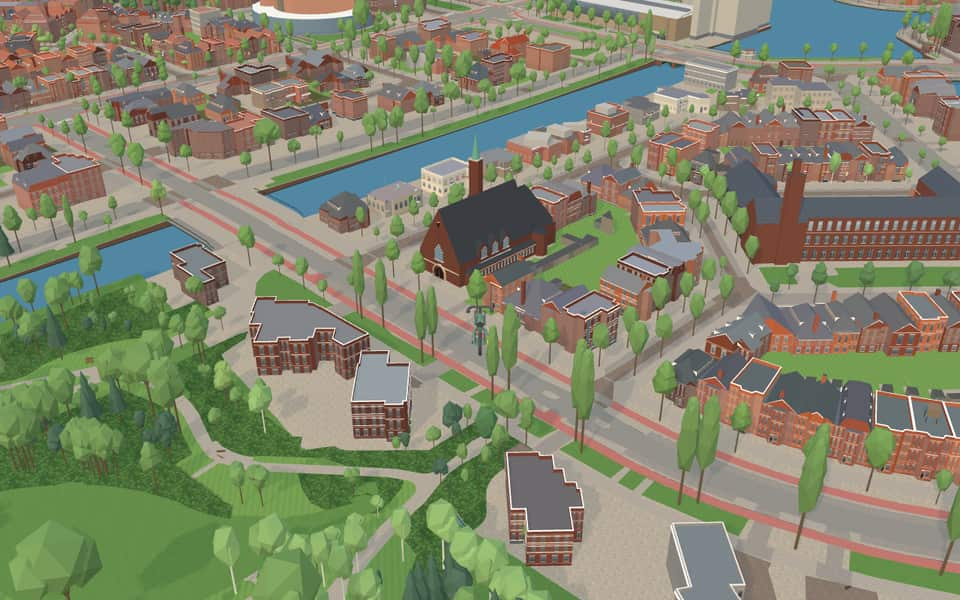
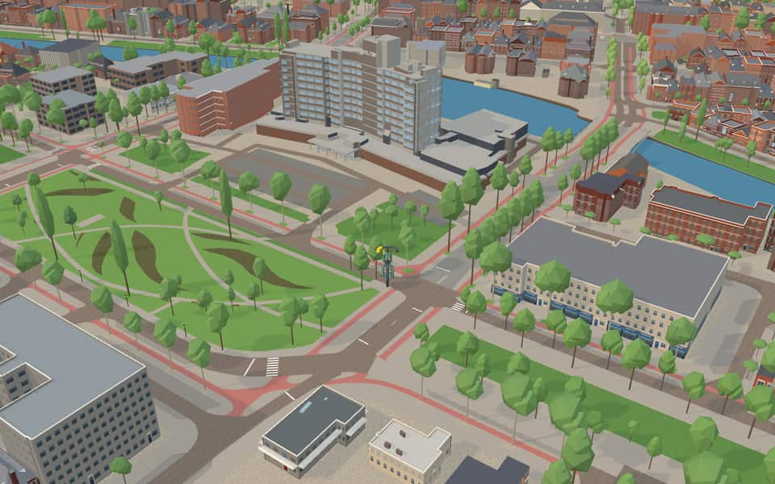
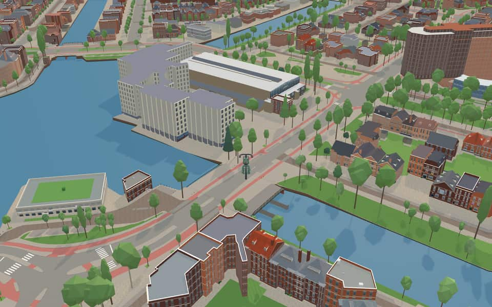

Quarter in Oud-Zuid
Apollobuurt
Apollobuurt is a neighborhood of Amsterdam, Netherlands. It is part of the borough of Amsterdam-Zuid. The neighborhood is characterized by a spacious and luxurious design. The streets are named after Greek legends, painters and composers. The main east–west streets are Apollolaan and Stadionweg, the main shopping street is Beethovenstraat. en.wikipedia.org


In the game
Frames from a ride through Apollobuurt.




6 more photos of Apollobuurt

.jpg){kind=link}


Built here
Buildings modelled one by one for the ride.
Vrijburg
Hilton Amsterdam
- No picture yet
Kinderbrug: Boy with rabbits (Hildo Krop)
Apollolaan 4 / Stadionweg 5 (Apollohal), Amsterdam-Zuid (Olympisch Kwartier)
1934 sports hall of brick with a tall glazed upper hall, a curved glass roof edge, brick entrance annexes with round windows and a canopied glass entrance
- No picture yet
Vossius Gymnasium, Messchaertstraat 1, Amsterdam (1930 brick school, three wings, tiled roofs with dormer bands)
Did you know
Trivia the ride can show you here.
- Spacious streets from Berlage’s Plan Zuid, largely built in the 1920s and 1930s. Wikipedia
- John Lennon and Yoko Ono held their 1969 Bed-In for Peace at the Amsterdam Hilton here. Wikipedia
- Most of the buildings date from the 1920s and 1930s and are in the Amsterdam School style. The whole neighbourhood is part of Berlage's Plan Zuid. Between the wars it was popularly called Nieuw-Zuid, and in Yiddish-speaking circles Joods-Zuid (Jewish South). nl.wikipedia.org
- Amsterdam Memorial to the Canadian LiberatorsThousands of Canadian troops entered the city in 1945 to liberate Amsterdam. nl.wikipedia.org
- Amsterdam Memorial to the Canadian LiberatorsAbout half a million local residents cheered on the arriving soldiers. nl.wikipedia.org
- Amsterdam Memorial to the Canadian LiberatorsOn May 5, 1980, Canadians retraced their 1945 liberation route through the city. nl.wikipedia.org
- Amsterdam Memorial to the Canadian LiberatorsSculptor Jan de Baat created the steel flag that rises from a grassy field. nl.wikipedia.org
- Monument voor gefusilleerde verzetstrijdersOn October 24, 1944, German occupiers executed 29 prisoners here as reprisal for resistance actions. nl.wikipedia.org
- Monument voor gefusilleerde verzetstrijdersSculptor Jan Havermans designed the statue after receiving his final order in February 1951. nl.wikipedia.org
- Dick SchmüllbrugAn original urinal on the bridge was eventually closed off to the public. nl.wikipedia.org
- Dick SchmüllbrugConstruction began in July 1940 to replace an older iron emergency bridge. nl.wikipedia.org
- Noorder AmstelkanaalThe canal is absent from street name and postal code books because its banks have different names. nl.wikipedia.org
- Noorder AmstelkanaalTram line 5 crosses the canal on the Timo Smeehuijzenbrug. nl.wikipedia.org
- Noorder AmstelkanaalThe Lyceumbrug connects the Amsterdam Lyceum to Olympiaplein. nl.wikipedia.org
11 more facts
- Zuider AmstelkanaalTram lines 5 and 24 cross the canal on two of its eight bridges. nl.wikipedia.org
- BeethovenstraatTrendy restaurants and bars have opened here in increasing numbers since the coronavirus crisis. nl.wikipedia.org
- BeethovenstraatBridge 417 allowed the street to cross the Zuider Amstel Canal in 1939 or 1940. nl.wikipedia.org
- BeethovenstraatActress Fien de la Mar lived here before jumping from a two-meter window in 1965. nl.wikipedia.org
- DiepenbrockstraatA clairvoyant prophet lived here from the 1980s until her death, having established a chapel dedicated to the Virgin of all Peoples. nl.wikipedia.org
- ParnassuswegIn the 1950s, the road was extended toward Buitenveldert to reach the A10 ring road. nl.wikipedia.org
- ParnassuswegSince 1972, the road has been raised to create a highway-like appearance with lower paths for cyclists and pedestrians. nl.wikipedia.org
- ParnassuswegTram line 5 began operating on the southern section of the street in 2008. nl.wikipedia.org
- StadionwegArchitect Harry Elte designed the original stadium that gave Stadionweg its name. nl.wikipedia.org
- StadionwegThe path is broken into three parts by two interruptions at Minervaplein and Olympiaplein. nl.wikipedia.org
- StadionwegStadionweg leads directly to the Olympic Stadium. nl.wikipedia.org
Names on the map
Where the canal, bridge and street names come from.
Canals and water
- Noorder AmstelkanaalA canal linking the Amstel and the Schinkel.
- Zuider AmstelkanaalThe southern part of the Amstelkanaal, referring to the river Amstel.
1 other canal without a recorded story
De Kom
Bridges
- Dick SchmüllbrugDiederich Herman 'Dick' Schmüll (Sumatra, 1908 - Amsterdam, 1990) founded the Dutch Basketball Federation and the Dutch Volleyball Federation.Bridge 415: a steel bridge for road traffic, dated 1942 in the city's bridge register.
- Isaac IsraëlsbrugIsaac Israëls (1865-1934) was the son of Jozef Israëls (1824-1911) and also a painter. With George Breitner, Willem Witsen, Jac. van Looy and Jan Eduard Karsen he was a representative of the Amsterdam school of painting. He painted factory girls and impressions of the city, among other things. At the 1928 Olympic Games in Amsterdam he won a gold Olympic art medal in painting for his picture 'De Rode Ruiter' (the red rider). This bridge connects to the Breitnerstraat and lies near the Willem Witsenstraat.Bridge 408: a reinforced concrete bridge for road traffic, dated 1961 in the city's bridge register.
Streets
- Adama van ScheltemapleinCarel Steven Adama van Scheltema (1877-1924), socialist poet, popular for his simplicity and clarity.
- Albert HahnplantsoenPolitical cartoonist (1877-1918), mainly of caricatures. The park was previously called Willem Witsenplantsoen.
- Albrecht DürerstraatGerman painter (1471-1528), also a renowned engraver and woodcut artist.
- Anthonie van DijckstraatFlemish painter (1599-1641), pupil of Rubens and court painter to Charles I of England. In his day he was the greatest portrait painter.
- ApollolaanApollo was one of the principal gods of Greek mythology: god of the sun, music and poetry, and leader of the Muses. The widened section of this avenue, near the Minervalaan, bore the name August Allebéplein until 1958.
- BachpleinJohann Sebastian Bach (1685-1750), German composer. He was the most important member of the German Bach family, which produced many composers. His works include oratorios (the St Matthew Passion) and some two hundred surviving cantatas. He was the last and most universal representative of the Baroque.
- BachstraatJohann Sebastian Bach (1685-1750), German composer. He was the most important member of the German Bach family, which produced many composers. His works include oratorios (the St Matthew Passion) and some two hundred surviving cantatas. He was the last and most universal representative of the Baroque.
- BeethovenstraatLudwig van Beethoven (1770-1827), German composer and grand master of instrumental music. His works include 9 symphonies, 32 piano sonatas, 11 overtures and 17 string quartets.
- Bernard ZweerskadeComposer and choral conductor (1854-1924). He was a senior teacher at the Amsterdams Conservatorium. For his songs and choral works he used only Dutch texts, by poets such as Boutens and Verweij.
- BotticellistraatSandro Botticelli (1447-1510), Italian painter of allegorical figure pieces and portraits.
- BrahmsstraatJohannes Brahms (1833-1897), German composer and a grand master of chamber music. Among his works are four symphonies, a violin concerto, two piano concertos and some three hundred songs.
- BreitnerstraatGeorge Hendrik Breitner (1857-1923), impressionist painter, above all of Amsterdam cityscapes. The street was first named Dijsselhofstraat (council decision of 22 April 1925).
48 more streets with a story
- BreughelstraatA Southern Netherlandish family of painters of the sixteenth and seventeenth centuries. Best known are Pieter the Elder, 'Peasant Bruegel' (1525-1569), Pieter the Younger, 'Hell Bruegel' (1564-1638), and Jan the Elder, nicknamed 'Velvet Bruegel' (1568-1625).
- ChopinstraatFrédéric Chopin (1810-1849), Polish composer and pianist, who settled in Paris in 1831.
- CliostraatThe muse of history (Greek mythology).
- CorellistraatArcangelo Corelli (1653-1713), Italian composer and violinist.
- Cornelis SchuytstraatComposer and organist (1557-1616), known above all as an organist.
- CourbetstraatGustave Courbet (1819-1877), French realist painter, mainly of hunting scenes and figure pieces.
- DiepenbrockstraatAlphonsus Joannes Maria Diepenbrock (1862-1921), a composer of international standing who wrote mainly church music.
- DijsselhofplantsoenGerrit Willem Dijsselhof (1866-1924), impressionist painter. For some years the park was first called Breitnerplantsoen (council decision of 22 April 1925).
- EmmastraatAdelheid Emma Wilhelmina Theresia of Waldeck-Pyrmont (1858-1934), second wife of King Willem III, Queen Regent from 1890 to 1898, and mother of Queen Wilhelmina.
- Gerrit van der VeenstraatGerrit Jan van der Veen (1902-1944), resistance fighter and sculptor by profession, who won the Prix de Rome for his sculpture. He took an active part in the resistance. Van der Veen was one of the instigators of the attack on the population register (27 March 1943) and was executed by firing squad in the dunes near Overveen. The street was previously called Euterpestraat, after the muse of music and poetry, and during the occupation of 1940-1945 was notorious because the German Sicherheitsdienst (SD) was based in the girls' secondary school (Meisjes-HBS).
- Guido GezellestraatFlemish priest and poet (1830-1899) with a very large body of work, above all a nature poet.
- HändelstraatGeorge Frideric Handel (1685-1759), German-English composer. Besides operas he composed 32 oratorios, six concerti grossi, twenty organ concertos, chamber music, songs and festive music.
- Herman GorterstraatPoet (1864-1927) who made his name above all with his great nature poem 'Mei' (May, 1889). He wrote 'Kritiek op de Literaire beweging der Tachtigers' (a critique of the literary movement of the Eighties) and was for many years a militant Marxist socialist.
- Herman HeijermanswegJournalist, novelist and playwright (1864-1924). He wrote many novels set in Amsterdam, some under the pseudonym Samuel Falkland. His great success was the play 'Op hoop van zegen' (The Good Hope).
- HolbeinstraatHans Holbein the Younger (1497-1543), German painter and engraver.
- Jan van EijckstraatSouthern Netherlandish painter (1386-1440), court painter to John of Bavaria and later to Philip of Burgundy. He used oil paint in a way entirely new for the time.
- Joseph HaydnpadJoseph Haydn (1732-1809), Austrian composer.
- LeonardostraatLeonardo da Vinci (1452-1519), Italian painter, sculptor and architect, an artist of great genius, who painted 'The Last Supper' and the 'Mona Lisa'.
- MemlingstraatHans Memling (1430-1494), Southern Netherlandish painter of altarpieces and portraits. A number of his works are brought together in Bruges.
- MesschaertstraatJohannes Martinus Messchaert (1857-1922), baritone, who in 1884 founded the Amsterdam Conservatory with Daniël de Lange, Frans Coenen and Julius Röntgen.
- MichelangelostraatMichelangelo Buonarroti (1475-1564), Italian sculptor, painter, architect and poet, the greatest artist of his time (the dome of St Peter's and the paintings in the Sistine Chapel in Rome).
- MilletstraatJean-François Millet (1815-1875), French landscape painter.
- MinervalaanIn Roman mythology, the goddess of wisdom (Minerva).
- MinervapleinIn Roman mythology, the goddess of wisdom (Minerva).
- MozartkadeWolfgang Amadeus Mozart (1756-1791), Austrian composer of church music, operas, symphonies, piano concertos, songs and chamber music, the greatest composer of the classical period.
- MurillostraatBartolomé Esteban Murillo (1618-1682), Spanish Baroque painter (Madonnas and saints).
- MuzenpleinIn Greek mythology the Muses (daughters of Zeus) are the goddesses of the arts and sciences.
- OlympiapleinThe sacred site in ancient Greece where the Olympic Games were first held, in 776 BC.
- ParnassuswegA mountain in Greece, in Greek mythology the home of Apollo and the Muses. Today used figuratively for the realm of poetry.
- Quinten MassijsstraatFlemish painter and goldsmith (1466-1530). The name is also written Matsijs (Quentin Matsys).
- RaphaëlpleinRaffaello Santi or Sanzio (1483-1520), Italian painter and a leading figure of the Renaissance, who painted many Madonnas, frescoes and portraits. He also worked as an architect on St Peter's in Rome.
- RaphaëlstraatRaffaëllo di Senti (1483-1520), Italian painter and a leading figure of the Renaissance, who painted many Madonnas, frescoes and portraits. He also worked as an architect on St Peter's in Rome.
- Richard WagnerstraatGerman composer (1813-1883), creator of the nineteenth-century German music drama ('Lohengrin', 'Tannhäuser', 'Parsifal', the 'Ring of the Nibelung').
- RossinistraatGioachino Rossini (1792-1868), Italian opera composer.
- RubensstraatPeter Paul Rubens (1577-1640), Southern Netherlandish painter of biblical scenes and history pieces, known for his voluptuous female figures, and the teacher of Anthony van Dyck.
- SchubertstraatFranz Schubert (1797-1828), Austrian composer of symphonies, chamber music and songs, among them 'Die Forelle', 'Erlkönig' and the cycle 'Winterreise'.
- StadionkadeSince the Greeks a stadium has been a sports ground with tiers of seats rising around it. The road runs past where the stadium stood when it was named in 1922 (level with today's Amazonestraat). The Olympic Stadium (on the square) was built for the 1928 Olympic Games.
- StadionwegSince the Greeks a stadium has been a sports ground with tiers of seats rising around it. The road runs past where the stadium stood when it was named in 1922 (level with today's Amazonestraat). The Olympic Stadium (on the square) was built for the 1928 Olympic Games.
- Timo SmeehuijzenbrugTimo Smeehuijzen was a 20-year-old soldier killed in Afghanistan on 15 June 2007. Before that he went to school at the nearby Fons Vitae lyceum, hence this location. The bridge also honours all the other soldiers who died in Afghanistan.
- TintorettostraatJacopo Robusti (1518-1594), who called himself Tintoretto, Italian painter and one of the leading painters of the Venetian school.
- TitiaanstraatThe painter's name of Tiziano Vecellio (c. 1488-1576), famous master of the Venetian school.
- VelazquezstraatDiego Rodríguez de Silva y Velázquez (1599-1660), Spanish painter of history pieces and portraits.
- VerdistraatGiuseppe Verdi (1813-1901), Italian opera composer, whose works include 'Aida', 'Rigoletto' and 'La Traviata'.
- VeronesestraatPaolo Caliari, called Veronese (1528-1588), Italian painter of large decorative canvases.
- WatteaustraatJean-Antoine Watteau (1684-1721), French painter in the Rococo style.
- WielingenstraatThe channel in the mouth of the Westerschelde.
- Willem RoyaardsstraatWillem Cornelis Royaards (1867-1929), actor and director, who led his own company for some years before becoming chairman of the Vereeniging Het Nederlandsch Tooneel from 1920 to 1924.
- Willem WitsenstraatPainter (1860-1923) of Amsterdam townscapes, a kindred spirit of Breitner. The street was originally named Albert Hahnstraat (council decision of 22 April 1925).